本文主要目的是剖析AES(Rijndael)算法的来龙去脉，包括源码实现。
AES
Note:本来打算剖析openSSL里的AES，结果发现代码是高度优化的，很难阅读理解。索性找了个更适合剖析的实现: tiny-AES-c。1000多stars，想必也很靠谱了。
流程
tiny-AES-C总览
以最简单的加密模式ECB为例，ECB的加密解密接口如下：
void AES_ECB_encrypt(struct AES_ctx *ctx, uint8_t* buf)
{
// The next function call encrypts the PlainText with the Key using AES algorithm.
Cipher((state_t*)buf, ctx->RoundKey);
}
void AES_ECB_decrypt(struct AES_ctx* ctx, uint8_t* buf)
{
// The next function call decrypts the PlainText with the Key using AES algorithm.
InvCipher((state_t*)buf, ctx->RoundKey);
}
可见Cipher和InvCipher才是关键，本文主要剖析Cipher：
static void Cipher(state_t* state, uint8_t* RoundKey)
{
uint8_t round = 0;
// 第0轮，只做AddRoundKey
AddRoundKey(0, state, RoundKey);
// 传说中的“轮函数”，循环9轮
for (round = 1; round < Nr; ++round)
{
// 四大步骤
SubBytes(state);
ShiftRows(state);
MixColumns(state);
AddRoundKey(round, state, RoundKey);
}
// 末尾第10轮要特殊处理：去掉了MixColumns(state)
SubBytes(state);
ShiftRows(state);
AddRoundKey(Nr, state, RoundKey);
}
其中的Nr是常数，AES用到的常数如下：
// The number of columns comprising a state in AES. This is a constant in AES. Value=4
#define Nb 4
#if defined(AES256) && (AES256 == 1)
#define Nk 8
#define Nr 14
#elif defined(AES192) && (AES192 == 1)
#define Nk 6
#define Nr 12
#else
#define Nk 4 // The number of 32 bit words in a key.
#define Nr 10 // The number of rounds in AES Cipher.
#endif
可见，AES128的Nk为4，Nr为10。
state_t其实就是原文(plaintext)：
typedef uint8_t state_t[4][4];
state_t是定长16字节，所以Cipher是用来加密定长块的，更长的原文就需要分块加密。
state_t是二维数组，有列主导还是行主导的问题，state_t是列主导的，即state[column][row]。
下面就按被调用的顺序，逐个击破：AddRoundKey、SubBytes、ShiftRows、MixColumns。
AddRoundKey
其实就是state和roundkey做xor并覆盖state：

(from wiki)
static void AddRoundKey(uint8_t round,state_t* state,uint8_t* RoundKey)
{
uint8_t i,j;
for (i = 0; i < 4; ++i)
{
for (j = 0; j < 4; ++j)
{
(*state)[i][j] ^= RoundKey[(round * Nb * 4) + (i * Nb) + j];
}
}
}
SubBytes
SubBytes就是对state每一个字节(8bits，0到255），查表sbox（有256个元素，256到256的映射），原地转换：

(from wiki)
static void SubBytes(state_t* state)
{
uint8_t i, j;
for (i = 0; i < 4; ++i)
{
for (j = 0; j < 4; ++j)
{
(*state)[j][i] = getSBoxValue((*state)[j][i]);
// (*state)[i][j] = getSBoxValue((*state)[i][j]); 或者这样写，毕竟是方阵
}
}
}
static const uint8_t sbox[256] = {
//0 1 2 3 4 5 6 7 8 9 A B C D E F
0x63, 0x7c, 0x77, 0x7b, 0xf2, 0x6b, 0x6f, 0xc5, 0x30, 0x01, 0x67, 0x2b, 0xfe, 0xd7, 0xab, 0x76,
0xca, 0x82, 0xc9, 0x7d, 0xfa, 0x59, 0x47, 0xf0, 0xad, 0xd4, 0xa2, 0xaf, 0x9c, 0xa4, 0x72, 0xc0,
0xb7, 0xfd, 0x93, 0x26, 0x36, 0x3f, 0xf7, 0xcc, 0x34, 0xa5, 0xe5, 0xf1, 0x71, 0xd8, 0x31, 0x15,
0x04, 0xc7, 0x23, 0xc3, 0x18, 0x96, 0x05, 0x9a, 0x07, 0x12, 0x80, 0xe2, 0xeb, 0x27, 0xb2, 0x75,
0x09, 0x83, 0x2c, 0x1a, 0x1b, 0x6e, 0x5a, 0xa0, 0x52, 0x3b, 0xd6, 0xb3, 0x29, 0xe3, 0x2f, 0x84,
0x53, 0xd1, 0x00, 0xed, 0x20, 0xfc, 0xb1, 0x5b, 0x6a, 0xcb, 0xbe, 0x39, 0x4a, 0x4c, 0x58, 0xcf,
0xd0, 0xef, 0xaa, 0xfb, 0x43, 0x4d, 0x33, 0x85, 0x45, 0xf9, 0x02, 0x7f, 0x50, 0x3c, 0x9f, 0xa8,
0x51, 0xa3, 0x40, 0x8f, 0x92, 0x9d, 0x38, 0xf5, 0xbc, 0xb6, 0xda, 0x21, 0x10, 0xff, 0xf3, 0xd2,
0xcd, 0x0c, 0x13, 0xec, 0x5f, 0x97, 0x44, 0x17, 0xc4, 0xa7, 0x7e, 0x3d, 0x64, 0x5d, 0x19, 0x73,
0x60, 0x81, 0x4f, 0xdc, 0x22, 0x2a, 0x90, 0x88, 0x46, 0xee, 0xb8, 0x14, 0xde, 0x5e, 0x0b, 0xdb,
0xe0, 0x32, 0x3a, 0x0a, 0x49, 0x06, 0x24, 0x5c, 0xc2, 0xd3, 0xac, 0x62, 0x91, 0x95, 0xe4, 0x79,
0xe7, 0xc8, 0x37, 0x6d, 0x8d, 0xd5, 0x4e, 0xa9, 0x6c, 0x56, 0xf4, 0xea, 0x65, 0x7a, 0xae, 0x08,
0xba, 0x78, 0x25, 0x2e, 0x1c, 0xa6, 0xb4, 0xc6, 0xe8, 0xdd, 0x74, 0x1f, 0x4b, 0xbd, 0x8b, 0x8a,
0x70, 0x3e, 0xb5, 0x66, 0x48, 0x03, 0xf6, 0x0e, 0x61, 0x35, 0x57, 0xb9, 0x86, 0xc1, 0x1d, 0x9e,
0xe1, 0xf8, 0x98, 0x11, 0x69, 0xd9, 0x8e, 0x94, 0x9b, 0x1e, 0x87, 0xe9, 0xce, 0x55, 0x28, 0xdf,
0x8c, 0xa1, 0x89, 0x0d, 0xbf, 0xe6, 0x42, 0x68, 0x41, 0x99, 0x2d, 0x0f, 0xb0, 0x54, 0xbb, 0x16 };
#define getSBoxValue(num) (sbox[(num)])
要注意，sbox是AES的常量，不可随便修改。
ShiftRows
所谓shiftRows，就是第i行的左数i个元素，按序左出右进，因为state是4x4矩阵，所以：
- 第0行，不需要shift
- 第1行，左数1个元素，按序左出右进，变成\( a_{1,1}\ a_{1,2}\ a_{1,3}\ a_{1,0}\ \)
- 第2行，左数2个元素，按序左出右进，变成\( a_{2,2}\ a_{2,3}\ a_{2,0}\ a_{2,1}\ \)
- 第3行，左数3个元素，按序左出右进，变成\( a_{3,3}\ a_{3,0}\ a_{3,1}\ a_{3,2}\ \)
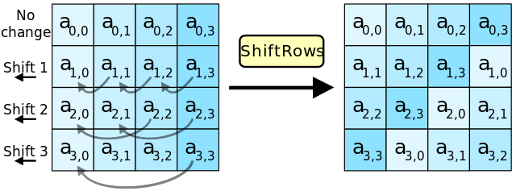
(from wiki)
static void ShiftRows(state_t* state)
{
uint8_t temp;
// 记住，state是state[column][row]
// shift第1行
temp = (*state)[0][1];
(*state)[0][1] = (*state)[1][1];
(*state)[1][1] = (*state)[2][1];
(*state)[2][1] = (*state)[3][1];
(*state)[3][1] = temp;
// shift第2行，即0列和2列换、1列和3列换
temp = (*state)[0][2];
(*state)[0][2] = (*state)[2][2];
(*state)[2][2] = temp;
temp = (*state)[1][2];
(*state)[1][2] = (*state)[3][2];
(*state)[3][2] = temp;
// shift第3行
temp = (*state)[0][3];
(*state)[0][3] = (*state)[3][3];
(*state)[3][3] = (*state)[2][3];
(*state)[2][3] = (*state)[1][3];
(*state)[1][3] = temp;
}
MixColumns
MixColumns是最复杂的一步，连代码都很难看懂在干嘛。必须先补相关数学知识才行。
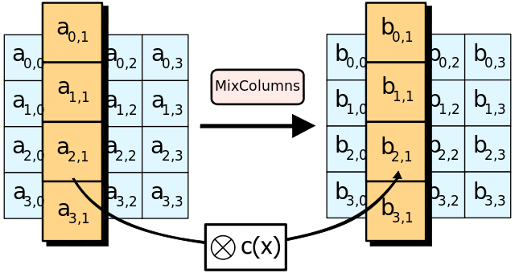
(from wiki)
static uint8_t xtime(uint8_t x)
{
return ((x<<1) ^ (((x>>7) & 1) * 0x1b));
}
// MixColumns function mixes the columns of the state matrix
static void MixColumns(state_t* state)
{
uint8_t i;
uint8_t Tmp, Tm, t;
// 从第0列遍历到第3列
for (i = 0; i < 4; ++i)
{
t = (*state)[i][0];
Tmp = (*state)[i][0] ^ (*state)[i][1] ^ (*state)[i][2] ^ (*state)[i][3] ;
Tm = (*state)[i][0] ^ (*state)[i][1] ; Tm = xtime(Tm); (*state)[i][0] ^= Tm ^ Tmp ;
Tm = (*state)[i][1] ^ (*state)[i][2] ; Tm = xtime(Tm); (*state)[i][1] ^= Tm ^ Tmp ;
Tm = (*state)[i][2] ^ (*state)[i][3] ; Tm = xtime(Tm); (*state)[i][2] ^= Tm ^ Tmp ;
Tm = (*state)[i][3] ^ t ; Tm = xtime(Tm); (*state)[i][3] ^= Tm ^ Tmp ;
}
}
什么是mixColumns
首先要讲2个概念：Confusion(混淆)和Diffusion(扩散)。
Confusion：密文的每一bit应该和秘钥的多个部分相关，使得密文和密钥的联系变得含糊。
Diffusion：即如果我们改变原文的单个bit，会导致密文里一半(平均统计值）的bits发生改变；类似的，如果改变密文的单个bit，会导致原文一半的bits发生改变。又因为一个bit只有2个状态，如果随机地改变某个bit的位置，也会导致密文(或原文)一半的bits发生改变。
这2个概念搞懂后，开始看mixColumns。（mixColumns其实有专门的wiki介绍。）
mixColumns其实就是AES算法里最主要的产生Diffusion效果的步骤。
state的每一列被当成四项多项式的4个系数（4个bytes)：
\[ a(x) = a_{3}x^{3} + a_{2}x^{2} + a_{1}x + a_{0} \]
用图表示：
(from wiki)
中间这个奇怪的4x4矩阵叫MDS矩阵，mixColumns的wiki有推导过程，另外我还找到一份可能更好理解的推导过程。
综合这2份资料，下面解释下推导过程。
首先，mixColumns有2个“常数”性质的多项式：
- 固定多项式：\( 3x^{3} + x^{2} + x + 2 \)
- 多项式乘法模：\( x^{4} + 1 \)
让上面的列系数多项式和固定多项式相乘并展开结果：
\( (a_{3}x^{3} + a_{2}x^{2} + a_{1}x + a_{0})\cdot (3x^{3} + x^{2} + x + 2) \)
\( = 3a_{3}x^{6} + 1a_{3}x^{5} + 1a_{3}x^{4} + 2a_{3}x^{3} + \)
\( 3a_{2}x^{5} + 1a_{2}x^{4} + 1a_{2}x^{3} + 2a_{2}x^{2} + \)
\( 3a_{1}x^{4} + 1a_{1}x^{3} + 1a_{1}x^{2} + 2a_{1}x^{1} + \)
\( 3a_{0}x^{3} + 1a_{0}x^{2} + 1a_{0}x^{1} + 2a_{0}x^{0} \)
共有16项（MDS4x4矩阵的由来），但其中有的项的x的次数已经大于等于4，而我们需要的是x小于等于3次的多项式。怎么办呢？这时候就要拿出上面的模数\( x^{4} + 1 \)。
多项式怎么做模运算？先回顾简单代数的模运算：
当2个整数a、b的差等于k个整数n的积时（k可以是任意整数）有:\( a - b = kn \)，可以写成：\(a \equiv b (mod \ n) \)。
于是多项式的模运算定义如下：
\[ a(x) \equiv b(x) (mod \ P(x)) \]
也即是说，可以用下面的公式求解多项式a(x)关于P(x)的模b(x)：
\[ a(x) = x^{k} P(x) + b(x) \]
那么令\( P(x) = x^{4} + 1 \)，\( a(x) = x^{6} \)，有：
\[ x^{6} = x^{2}(x^{4} + 1) - x^{2} \]
可知\(b(x) = - x^{2} \)，因为在AES里不存在负数的系数（系数是无符号单字节），所以“暴力地”写成\( x^{6} \equiv x^{2} (mod \ (x^{4} + 1)) \)，
同理可得：
\( x^{5} \equiv x^{1} (mod \ (x^{4} + 1)) \)
\( x^{4} \equiv x^{0} (mod \ (x^{4} + 1)) \)
于是可以列出通用公式：
\( x^{i} \equiv x^{i \ mod \ 4} (mod \ (x^{4} + 1)) \)
有了这个公式当武器后，前面的16项多项式就可以继续化简了，对等式两边同时取模\( x^{4} + 1 \)：
\( = (3a_{3}x^{6} + 1a_{3}x^{5} + 1a_{3}x^{4} + 2a_{3}x^{3} + \)
\( 3a_{2}x^{5} + 1a_{2}x^{4} + 1a_{2}x^{3} + 2a_{2}x^{2} + \)
\( 3a_{1}x^{4} + 1a_{1}x^{3} + 1a_{1}x^{2} + 2a_{1}x^{1} + \)
\( 3a_{0}x^{3} + 1a_{0}x^{2} + 1a_{0}x^{1} + 2a_{0}x^{0} ) \ mod \ (x^{4} + 1) \)
\( \equiv 3a_{3}x^{2} + 1a_{3}x^{1} + 1a_{3}x^{0} + 2a_{3}x^{3} + \)
\( 3a_{2}x^{1} + 1a_{2}x^{0} + 1a_{2}x^{3} + 2a_{2}x^{2} + \)
\( 3a_{1}x^{0} + 1a_{1}x^{3} + 1a_{1}x^{2} + 2a_{1}x^{1} + \)
\( 3a_{0}x^{3} + 1a_{0}x^{2} + 1a_{0}x^{1} + 2a_{0}x^{0} \)
按次数大小整理下顺序：
\( \equiv 2a_{3}x^{3} + 3a_{3}x^{2} + 1a_{3}x^{1} + 1a_{3}x^{0} + \)
\( 1a_{2}x^{3} + 2a_{2}x^{2} + 3a_{2}x^{1} + 1a_{2}x^{0} + \)
\( 1a_{1}x^{3} + 1a_{1}x^{2} + 2a_{1}x^{1} + 3a_{1}x^{0} + \)
\( 3a_{0}x^{3} + 1a_{0}x^{2} + 1a_{0}x^{1} + 2a_{0}x^{0} \)
再合并成4个等式:
\( b_{0}x^{0} = (1a_{3} + 1a_{2} + 3a_{1} + 2a_{0})x^{0} = (2a_{0} + 3a_{1} + 1a_{2} + 1a_{3})x^{0} \)
\( b_{1}x^{1} = (1a_{3} + 3a_{2} + 2a_{1} + 1a_{0})x^{1} = (1a_{0} + 2a_{1} + 3a_{2} + 1a_{3})x^{1} \)
\( b_{2}x^{2} = (3a_{3} + 2a_{2} + 1a_{1} + 1a_{0})x^{2} = (1a_{0} + 1a_{1} + 2a_{2} + 3a_{3})x^{2} \)
\( b_{3}x^{3} = (2a_{3} + 1a_{2} + 1a_{1} + 3a_{0})x^{3} = (3a_{0} + 1a_{1} + 1a_{2} + 2a_{3})x^{3} \)
把x去掉并整理成矩阵相乘的形式：
\[ \left[ \begin{matrix} b_{0}\\ b_{1}\\ b_{2}\\ b_{3}\\ \end{matrix} \right] = \left[ \begin{matrix} 2&3&1&1\\ 1&2&3&1\\ 1&1&2&3\\ 3&1&1&2\\ \end{matrix} \right] \left[ \begin{matrix} a_{0}\\ a_{1}\\ a_{2}\\ a_{3}\\ \end{matrix} \right] \]
现在分析对比下源码里的xtime函数和wiki给出的等价代码:
static uint8_t xtime(uint8_t x)
{
return ((x<<1) ^ (((x>>7) & 1) * 0x1b));
}
// 整理过的：
static uint8_t xtime2(uint8_t x)
{
return ((x<<1) ^ ((unsigned char)((signed char)x >> 7) & 0x1b));
}
/*
原始代码段：
h = (unsigned char)((signed char)r[c] >> 7); // arithmetic right shift, thus shifting in either zeros or ones
b[c] = r[c] << 1; // implicitly removes high bit because b[c] is an 8-bit char, so we xor by 0x1b and not 0x11b in the next line
b[c] ^= 0x1B & h; // Rijndael's Galois field
*/
// 测试通过：
for(uint8_t i = 0; i < uint8_t(-1); i++) {
assert(xtime(i) == xtime2(i));
}
经过以上测试，发现只是写法不同，那么xtime是什么意思呢？逐步分析下：
- 第一种：((x<<1) ^ (((x>>7) & 1) * 0x1b));
- 第二种：((x<<1) ^ ((unsigned char)((signed char)x >> 7) & 0x1b));
观察发现是后半段有差异，后半段的差异在于有无显式类型转化、有无&1，*0x1b还是&0x1b。根据x最高位是否为1，可分2种情况：
第一种：
- x最高位为1：((x>>7) & 1)等于1，(((x>>7) & 1) * 0x1b))等于0x1b
- x最高位为0：((x>>7) & 1)等于0，(((x>>7) & 1) * 0x1b))等于0x00
第二种：
- x最高位为1：(unsigned char)((signed char)x >> 7)等于0xff，&0x1b后等于0x1b
- x最高位为0：(unsigned char)((signed char)x >> 7)等于0x00，&0x1b后等于0x00
经过枚举后，就知道了xtime其实可以化简成：
- x最高位为1：(x<<1) ^ 0x1b（式1）
- x最高位为0：(x<<1) ^ 0x00（式2）
(x<<1)又是什么含义呢？x左移1位，即x乘以2。这可以有2种思路来理解：
- x用二进制表示，每一bit就是最高次为7的多项式的系数(这个系数要么0要么1)，x乘以2，系数都左移1位，即多项式乘以x；那么如果最高位为1，就会导致\(x^{7} \)变成\(x^{8} \)，超出了多项式的范围
- x不用想成多项式，仅需要变成二进制，那么显然8bits的二进制左移1位，就有最高位溢出的可能
所以，xtime是在算一个项的系数的2倍，而后面的0x1b操作，是用来处理溢出问题的。
为什么0x1b能使得2x不超出GF(256)呢，这又是用到了GF(256)的乘约运算。0x1b是一个不可约多项式的系数，写成二进制就是0b00011011，写成多项式就是：
\[ x^{4} + x^{3} + x + 1 \]
（注意这个多项式和前面的\( P(x) = x^{4} + 1 \) 是不一样的。这个多项式的各个系数取值是0或1；而P(x)的系数取值范围是GF(256)。）
在GF里，异或操作就意味着多项式加法，所以上面的式1和式2其实就是GF下的多项式加法。设xtime(x)的参数x为F(x)：
- F(x)最高位为1：\( (2F(x)表示的多项式去掉溢出项) + (x^{4} + x^{3} + x + 1) \)（式1）
- F(x)最高位为0：\( (2F(x)表示的多项式) \)（式2）
这就是xtime的逻辑了。xtime搞懂后，就可以看MixColumn了，也就是前面贴的MDS矩阵相乘运算。
前面给出的MixColumns函数很复杂，用伪代码简化下：
for (i = 0; i < 4; ++i)
{
t = a[0];
Tmp = a[0] ^ a[1] ^ a[2] ^ a[3] ;
Tm = a[0] ^ a[1] ; Tm = xtime(Tm); a[0] ^= Tm ^ Tmp ;
Tm = a[1] ^ a[2] ; Tm = xtime(Tm); a[1] ^= Tm ^ Tmp ;
Tm = a[2] ^ a[3] ; Tm = xtime(Tm); a[2] ^= Tm ^ Tmp ;
Tm = a[3] ^ t ; Tm = xtime(Tm); a[3] ^= Tm ^ Tmp ;
}
接下来推导这些代码，证明它就是上面的矩阵相乘运算。
这6行代码可以改写成5行公式：
- \( Tmp = a_{0} \oplus a_{1} \oplus a_{2} \oplus a_{3} \)
- \( a_{0} = a_{0} \oplus ((a_{0} \oplus a_{1})2) \oplus Tmp \)
- \( a_{1} = a_{1} \oplus ((a_{1} \oplus a_{2})2) \oplus Tmp \)
- \( a_{2} = a_{2} \oplus ((a_{2} \oplus a_{3})2) \oplus Tmp \)
- \( a_{3} = a_{3} \oplus ((a_{3} \oplus a_{0})2) \oplus Tmp \)
去掉Tmp：
- \( a_{0} = a_{0} \oplus (2a_{0} \oplus 2a_{1}) \oplus a_{0} \oplus a_{1} \oplus a_{2} \oplus a_{3} \)
- \( a_{1} = a_{1} \oplus (2a_{1} \oplus 2a_{2}) \oplus a_{0} \oplus a_{1} \oplus a_{2} \oplus a_{3} \)
- \( a_{2} = a_{2} \oplus (2a_{2} \oplus 2a_{3}) \oplus a_{0} \oplus a_{1} \oplus a_{2} \oplus a_{3} \)
- \( a_{3} = a_{3} \oplus (2a_{3} \oplus 2a_{0}) \oplus a_{0} \oplus a_{1} \oplus a_{2} \oplus a_{3} \)
因为一个数异或自己等于0，所以有：
- \( a_{0} = (2a_{0} \oplus 2a_{1}) \oplus a_{1} \oplus a_{2} \oplus a_{3} \)
- \( a_{1} = (2a_{1} \oplus 2a_{2}) \oplus a_{0} \oplus a_{2} \oplus a_{3} \)
- \( a_{2} = (2a_{2} \oplus 2a_{3}) \oplus a_{0} \oplus a_{1} \oplus a_{3} \)
- \( a_{3} = (2a_{3} \oplus 2a_{0}) \oplus a_{0} \oplus a_{1} \oplus a_{2} \)
这时，需要把异或换成用GF多项式加法表示：
- \( a_{0} = (2a_{0} + 2a_{1}) + a_{1} + a_{2} + a_{3} \)
- \( a_{1} = (2a_{1} + 2a_{2}) + a_{0} + a_{2} + a_{3} \)
- \( a_{2} = (2a_{2} + 2a_{3}) + a_{0} + a_{1} + a_{3} \)
- \( a_{3} = (2a_{3} + 2a_{0}) + a_{0} + a_{1} + a_{2} \)
然后就能合并同类项了：
- \( a_{0} = 2a_{0} + 3a_{1} + a_{2} + a_{3} \)
- \( a_{1} = 2a_{1} + 3a_{2} + a_{0} + a_{3} \)
- \( a_{2} = 2a_{2} + 3a_{3} + a_{0} + a_{1} \)
- \( a_{3} = 2a_{3} + 3a_{0} + a_{1} + a_{2} \)
整理顺序：
- \( a_{0} = 2a_{0} + 3a_{1} +\ a_{2} +\ a_{3} \)
- \( a_{1} =\ a_{0} + 2a_{1} + 3a_{2} +\ a_{3} \)
- \( a_{2} =\ a_{0} +\ a_{1} + 2a_{2} + 3a_{3} \)
- \( a_{3} = 3a_{0} +\ a_{1} +\ a_{2} + 2a_{3} \)
各行的系数：
- 2 3 1 1
- 1 2 3 1
- 1 1 2 3
- 3 1 1 2
所以这份代码和MDS矩阵相乘公式一致。
再补充下：wiki里的mixColumns实现其实更容易理解：
r[0] = b[0] ^ a[3] ^ a[2] ^ b[1] ^ a[1]; /* 2 * a0 + a3 + a2 + 3 * a1 */
r[1] = b[1] ^ a[0] ^ a[3] ^ b[2] ^ a[2]; /* 2 * a1 + a0 + a3 + 3 * a2 */
r[2] = b[2] ^ a[1] ^ a[0] ^ b[3] ^ a[3]; /* 2 * a2 + a1 + a0 + 3 * a3 */
r[3] = b[3] ^ a[2] ^ a[1] ^ b[0] ^ a[0]; /* 2 * a3 + a2 + a1 + 3 * a0 */
b[i]相当于2a[i]（xtime函数），所以上面4行代码相当于：
- \( 2 a_{0} + a_{3} + a_{2} + 3 a_{1} \)
- \( 2 a_{1} + a_{0} + a_{3} + 3 a_{2} \)
- \( 2 a_{2} + a_{1} + a_{0} + 3 a_{3} \)
- \( 2 a_{3} + a_{2} + a_{1} + 3 a_{0} \)
排序：
- \( 2 a_{0} + 3 a_{1} + a_{2} + a_{3} \)
- \( a_{0} + 2 a_{1} + 3 a_{2} + a_{3} \)
- \( a_{0} + a_{1} + 2 a_{2} + 3 a_{3} \)
- \( 3 a_{0} + a_{1} + a_{2} + 2 a_{3} \)
各行的系数：
- 2 3 1 1
- 1 2 3 1
- 1 1 2 3
- 3 1 1 2
也符合MDS矩阵乘法公式。
KeyExpansion 密钥扩展
KeyExpansion也叫Rijndael key schedule，就是把用户给出的16字节的密钥扩展到16*11=176字节。
可以把用户密钥Key理解为伪随机数生成器的种子，RoundKey就是随机出来的176字节的随机值。
wiki给出的流程图：
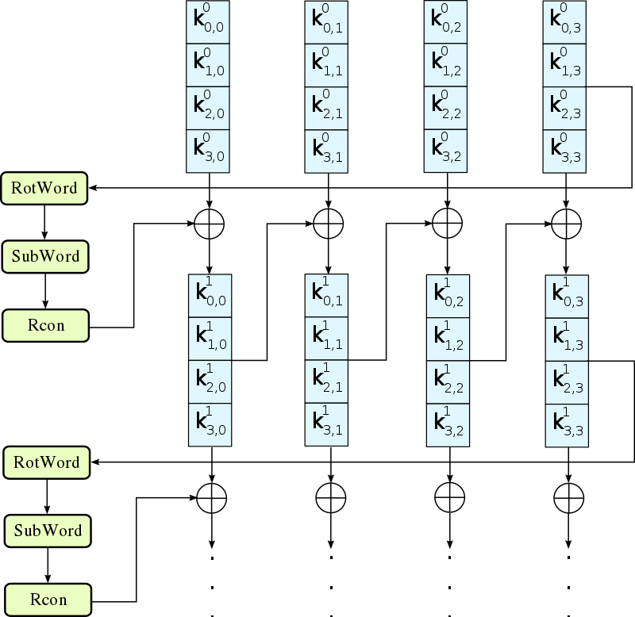
蓝色的4小块，其实就是一个4字节的字word：
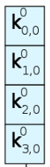
其中的这段特殊的操作，被称为g函数：
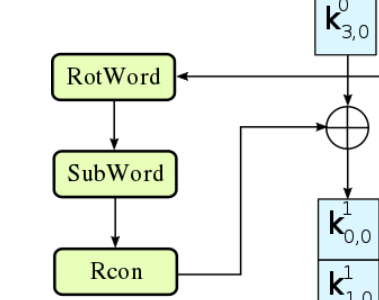
更具体的g函数处理过程：
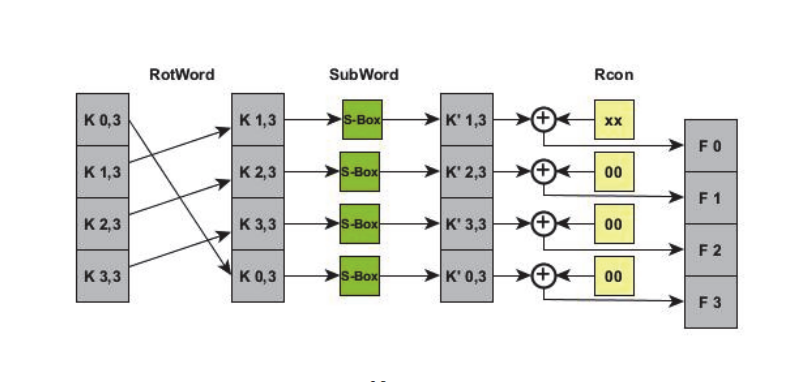
(from here)
如果去掉g函数，其实这个图表达的是这么一条公式：
\[ w_{i} = w_{i - 4} \oplus w_{i-1}， 4 \le i \le 43 \]
下面看tiny-AES-c源码剖析：
#define AES_BLOCKLEN 16 //Block length in bytes AES is 128b block only
#if defined(AES256) && (AES256 == 1)
#define AES_KEYLEN 32
#define AES_keyExpSize 240
#elif defined(AES192) && (AES192 == 1)
#define AES_KEYLEN 24
#define AES_keyExpSize 208
#else
#define AES_KEYLEN 16 // Key length in bytes
#define AES_keyExpSize 176
#endif
struct AES_ctx
{
uint8_t RoundKey[AES_keyExpSize];
#if (defined(CBC) && (CBC == 1)) || (defined(CTR) && (CTR == 1))
uint8_t Iv[AES_BLOCKLEN];
#endif
};
// The round constant word array, Rcon[i], contains the values given by
// x to the power (i-1) being powers of x (x is denoted as {02}) in the field GF(2^8)
static const uint8_t Rcon[11] = {
0x8d, 0x01, 0x02, 0x04, 0x08, 0x10, 0x20, 0x40, 0x80, 0x1b, 0x36 };
// This function produces Nb(Nr+1) round keys. The round keys are used in each round to decrypt the states.
static void KeyExpansion(uint8_t* RoundKey, const uint8_t* Key)
{
unsigned i, j, k;
uint8_t tempa[4]; // Used for the column/row operations
// AES_keyExpSize = 176 = 16 * 11，所以总共要做11轮
// 第0轮，直接复制到RoundKey
// AES-128的Nk为4，这里复制了16个字节，即把整个Key都复制进RoundKey了
// RoundKey[0] ... RoundKey[15] 即头4个字w0、w1、w2、w3（words）
// RoundKey总共有 176/4 = 44个words（w0到w43）
for (i = 0; i < Nk; ++i)
{
RoundKey[(i * 4) + 0] = Key[(i * 4) + 0];
RoundKey[(i * 4) + 1] = Key[(i * 4) + 1];
RoundKey[(i * 4) + 2] = Key[(i * 4) + 2];
RoundKey[(i * 4) + 3] = Key[(i * 4) + 3];
}
// All other round keys are found from the previous round keys.
// for( i = 4; i < 4 * (10 + 1); ++i)
// 从w4遍历到w43，i就是word的下标
for (i = Nk; i < Nb * (Nr + 1); ++i)
{
{
// 这段代码是把上一个word（i-1) 写进tempa
k = (i - 1) * 4;
tempa[0]=RoundKey[k + 0];
tempa[1]=RoundKey[k + 1];
tempa[2]=RoundKey[k + 2];
tempa[3]=RoundKey[k + 3];
}
// 这个if代码段就是g函数
if (i % Nk == 0) // 每4个字的第一个：w4、w8、w12···
{
// Function RotWord()
{
// 也可以叫shift操作
k = tempa[0];
tempa[0] = tempa[1];
tempa[1] = tempa[2];
tempa[2] = tempa[3];
tempa[3] = k;
}
// Function SubWord()
{
// sbox变换
tempa[0] = getSBoxValue(tempa[0]);
tempa[1] = getSBoxValue(tempa[1]);
tempa[2] = getSBoxValue(tempa[2]);
tempa[3] = getSBoxValue(tempa[3]);
}
// Function Rcon()
// 这个word的第一个字节，做RC异或变换
// Rcon[i/Nk]相当于Rcon[轮编号]，Rcon有11个值
tempa[0] = tempa[0] ^ Rcon[i/Nk];
}
j = i * 4; k=(i - Nk) * 4;
// 例如如果i=4，那么tempa是w3，i-Nk是w0
// 下面四行就是w4 = w0^w3
RoundKey[j + 0] = RoundKey[k + 0] ^ tempa[0];
RoundKey[j + 1] = RoundKey[k + 1] ^ tempa[1];
RoundKey[j + 2] = RoundKey[k + 2] ^ tempa[2];
RoundKey[j + 3] = RoundKey[k + 3] ^ tempa[3];
}
}
其中新出现的Rcon全称叫Round constant，其实是GF(256)下的多项式系数\( 2^{i - 1}\)模了\( x^{4} + x^{3} + x + 1 \)，其中i是轮数，范围[1,10]:
(from wiki)
模数的存在使得rcon的值不超过一个字节的范围。而i范围是[1,10]，所以有2个rcon会被模约: rcon[9]和rcon[10]。
rcon[0]到rcon[10]：0x8d, 0x01, 0x02, 0x04, 0x08, 0x10, 0x20, 0x40, 0x80, 0x1b, 0x36
其中，rcon[8]是0x80（128），rcon[9]是0x1b（27），rcon[10]是0x36（54），显然后2个被模约了。
其中还要注意，rcon[0]是忽略的，i取值也不会有0。
S-Box和Inv-S-Box
先搞懂S-Box的构造。S-Box其实是一个lookup函数，输入一个字节a，输出一个字节b。a到b的映射过程就是查一张预计算的sbox表：
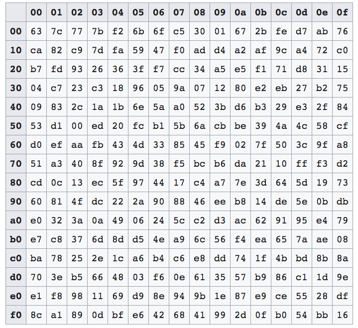
在c/c++中，sbox会实现为一个长度256的uint8_t数组，查表的过程非常简单，就是一次下标索引：b = sbox[a]。毕竟a的取值是[0,255]，没毛病。上面的sbox二维图和sbox一维数组，也是一样的。举2个例子：
- a=0x0f时，sbox[0x0f]，就是找sbox数组的第0x0f=15个元素，即图中的第一行的最后一个元素0x76，坐标(0，f）
- a=0x53时，sbox[0x53]，找第0x53个元素，纵坐标0x53/16 = 5，横坐标0x53%16 = 3，第5行第3个元素0xed，坐标（5，3）
从中可见，a的低4bits代表横坐标（第几列），高4bits代表纵坐标（第几行）；在代码里甚至不需要知道坐标，直接把a当下标去索引sbox数组即可，很方便。
剩下的问题就是，S-Box是怎么构造出来的？为什么sbox[0x0f]就得等于0x76？
先给出构造算法：
- 求a的GF乘法逆元：a = gmul_inverse(a)
- r = a
- a = rot(a); r= a
- a = rot(a); r= a
- a = rot(a); r= a
- a = rot(a); r= a
- r = 0x63;
- r就是sbox[a]了
资料：
https://github.com/kokke/tiny-AES-c
https://github.com/matt-wu/AES
https://www.cnblogs.com/luop/p/4334160.html
http://www.mesacc.edu/~scotz47781/mat120/notes/divide_poly/long_division/long_division.html
各种加密模式
openSSL实现了多种模式的AES，代码结构很清晰，不同模式有不同的代码文件。
AES的目录：/crypto/aes/，各种模式的目录：/crypto/modes/
ECB
ECB加密流程图

(from wiki)
这个做法超简单，也意味着很不安全，尤其是原文会重复的情况。
用一张图解释为什么ECB不安全：
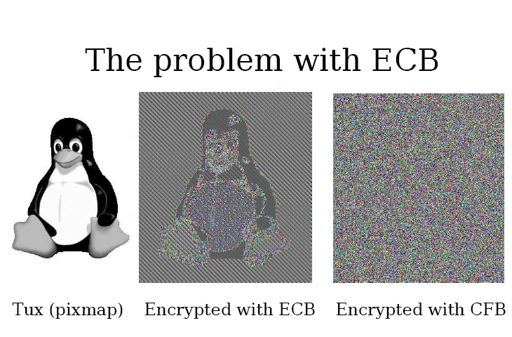
(from here)
CBC
CBC加密流程图
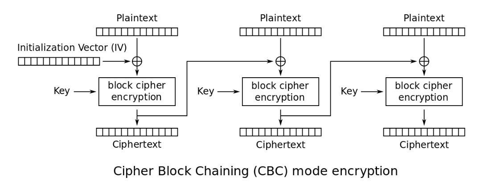
(from wiki)
\[ C_{i} = E_{K}(C_{i - 1}\oplus P_{i}) \]
\[ C_{0} = IV \]
其实就是三个步骤的无限循环
- 块原文和iv异或
- 块原文加密，输出块密文
- 把iv设为块密文
优点：
- 安全性优于ECB
缺点：
- 多了一个初始化向量IV的问题
- 因为块与块之间耦合，误差会传递
- 不能并行计算、随机读取
CBC加密代码
void CRYPTO_cbc128_encrypt(const unsigned char *in, unsigned char *out,
size_t len, const void *key,
unsigned char ivec[16], block128_f block)
{
···
// 抽象出来就是这么一段代码
while (len >= 16) {
// 第一步
for (n = 0; n < 16; ++n)
out[n] = in[n] ^ iv[n];
// 第二步
(*block) (out, out, key);
// 第三步
iv = out;
len -= 16;
in += 16;
out += 16;
}
···
}
CFB
CFB加密流程图
(from wiki)
\[ C_{i} = E_{K}(C_{i - 1})\oplus P_{i} \]
\[ C_{0} = IV \]
看公式可以发现和CBC很像。
CFB加密代码
void CRYPTO_cfb128_encrypt(const unsigned char *in, unsigned char *out,
size_t len, const void *key,
unsigned char ivec[16], int *num,
int enc, block128_f block)
{
unsigned int n;
size_t l = 0;
n = *num;
···
if (16 % sizeof(size_t) == 0) { /* always true actually */
do {
while (n && len) {
*(out++) = ivec[n] ^= *(in++);
--len;
n = (n + 1) % 16;
}
while (len >= 16) {
// 第一步 加密IV
(*block) (ivec, ivec, key);
// 第二步 和块原文异或输出块密文，同时IV变为块密文
for (; n < 16; n += sizeof(size_t)) {
*(size_t *)(out + n) =
*(size_t *)(ivec + n) ^= *(size_t *)(in + n);
}
len -= 16;
out += 16;
in += 16;
n = 0;
}
if (len) {
(*block) (ivec, ivec, key);
while (len--) {
out[n] = ivec[n] ^= in[n];
++n;
}
}
*num = n;
return;
} while (0);
}
···
}
CFB的加解密几乎一致，有微小区别，于是就用了enc变量来判断是加密还是解密，从而用一个函数搞定CFB。
OFB
OFB加密流程图

(from wiki)
OFB加密代码
void CRYPTO_ofb128_encrypt(const unsigned char *in, unsigned char *out,
size_t len, const void *key,
unsigned char ivec[16], int *num, block128_f block)
{
unsigned int n;
size_t l = 0;
n = *num;
···
if (16 % sizeof(size_t) == 0) { /* always true actually */
do {
while (n && len) {
*(out++) = *(in++) ^ ivec[n];
--len;
n = (n + 1) % 16;
}
while (len >= 16) {
// 循环加密IV
(*block) (ivec, ivec, key);
// 加密后的IV和块原文异或，输出块密文
for (; n < 16; n += sizeof(size_t))
*(size_t *)(out + n) =
*(size_t *)(in + n) ^ *(size_t *)(ivec + n);
len -= 16;
out += 16;
in += 16;
n = 0;
}
if (len) {
(*block) (ivec, ivec, key);
while (len--) {
out[n] = in[n] ^ ivec[n];
++n;
}
}
*num = n;
return;
} while (0);
}
*num = n;
···
}
OFB只需要一个CRYPTO_ofb128_encrypt，解密也是用这个函数，加解密的流程是完全对称的。
CTR
CTR加密流程图

(from wiki)
从图中就可以看出，CTR模式每个块之间的加密是解耦的，于是就有了并行计算的可能性。
CTR加密代码
void CRYPTO_ctr128_encrypt(const unsigned char *in, unsigned char *out,
size_t len, const void *key,
unsigned char ivec[16],
unsigned char ecount_buf[16], unsigned int *num,
block128_f block)
{
unsigned int n;
size_t l = 0;
n = *num;
if (16 % sizeof(size_t) == 0) { /* always true actually */
do {
while (n && len) {
*(out++) = *(in++) ^ ecount_buf[n];
--len;
n = (n + 1) % 16;
}
while (len >= 16) {
// 先加密IV，输出到ecount_buf
(*block) (ivec, ecount_buf, key);
// IV加1
ctr128_inc_aligned(ivec);
// 用ecount_buf去和块原文异或，输出块密文
for (n = 0; n < 16; n += sizeof(size_t))
*(size_t *)(out + n) =
*(size_t *)(in + n) ^ *(size_t *)(ecount_buf + n);
len -= 16;
out += 16;
in += 16;
n = 0;
}
if (len) {
(*block) (ivec, ecount_buf, key);
ctr128_inc_aligned(ivec);
while (len--) {
out[n] = in[n] ^ ecount_buf[n];
++n;
}
}
*num = n;
return;
} while (0);
}
*num = n;
}
XEX和XTS
XEX = Xor–encrypt–xor
XTS = XEX-based tweaked-codebook mode with ciphertext stealing
XEX：
(from wiki)
可以看到，用来加密原文的X，和三个参数有关：I(IV)、α、j，其中j相当于数组下标，另外2个是常量。因此这个算法是支持随机解密的，只需要知道块的编号j。适合做硬盘数据加密。
XTS：
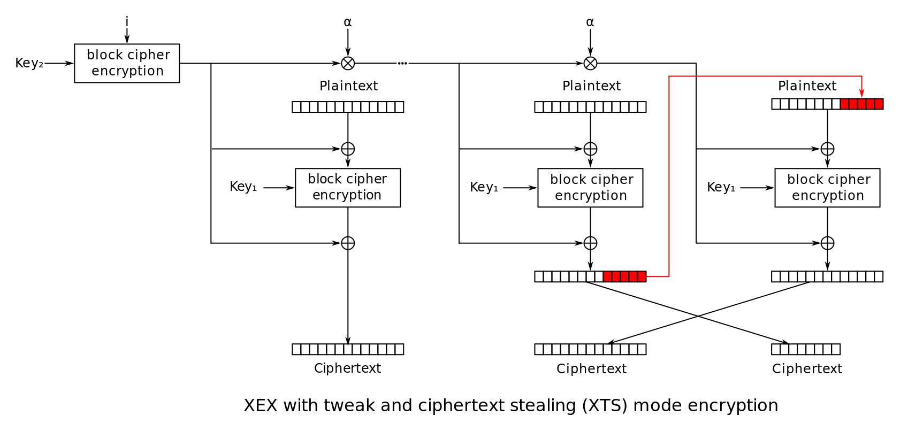
XEX或XTS的特点还有双key双加密算法，下面是openSSL关于XTS的代码：
struct xts128_context {
void *key1, *key2;
block128_f block1, block2;
};
GCM
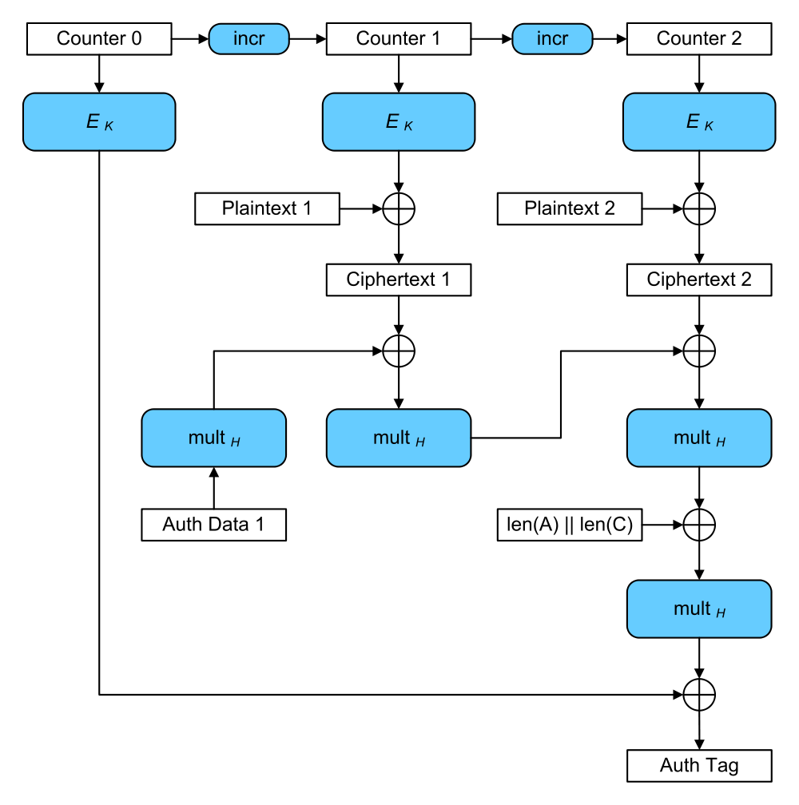
GCM有多牛，牛到有人专门录教学来介绍GCM：
https://www.cryptologie.net/article/277/what-is-gcm-galois-counter-mode/
根据wiki介绍，GCM实质是在CTR模式基础上增加一个Galois Mode，这个mode就是做认证用的（密文完整性）。
看上图也可以发现，前三行和前文的CTR流程图是一样的。
参考资料：
博主将十分感谢对本文章的任意金额的打赏^_^